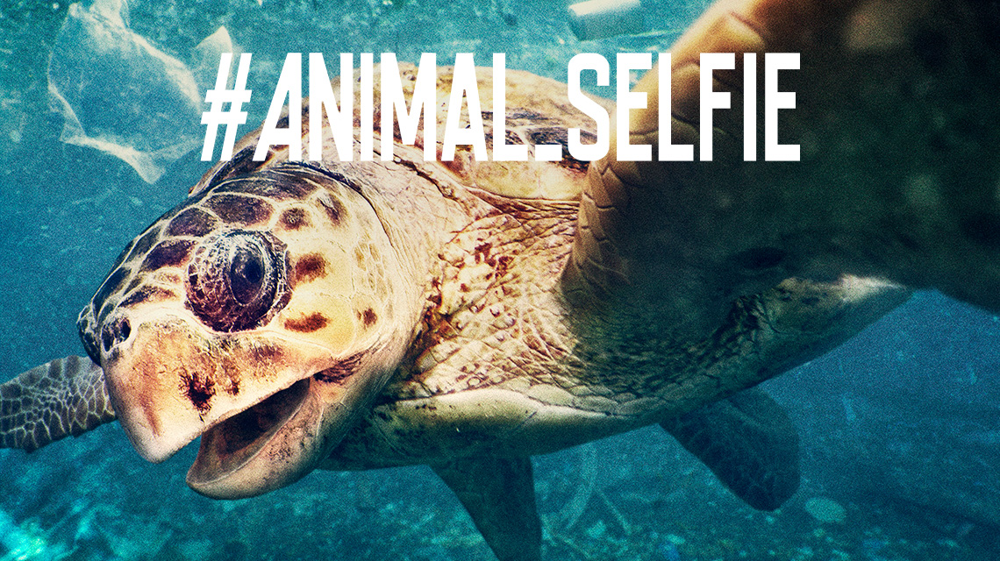
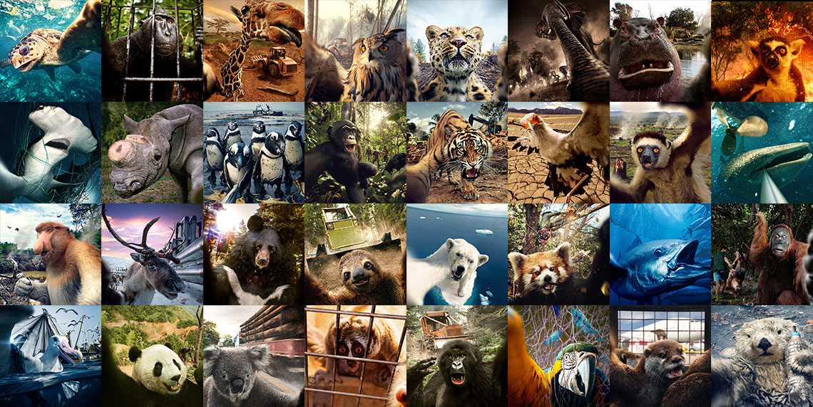
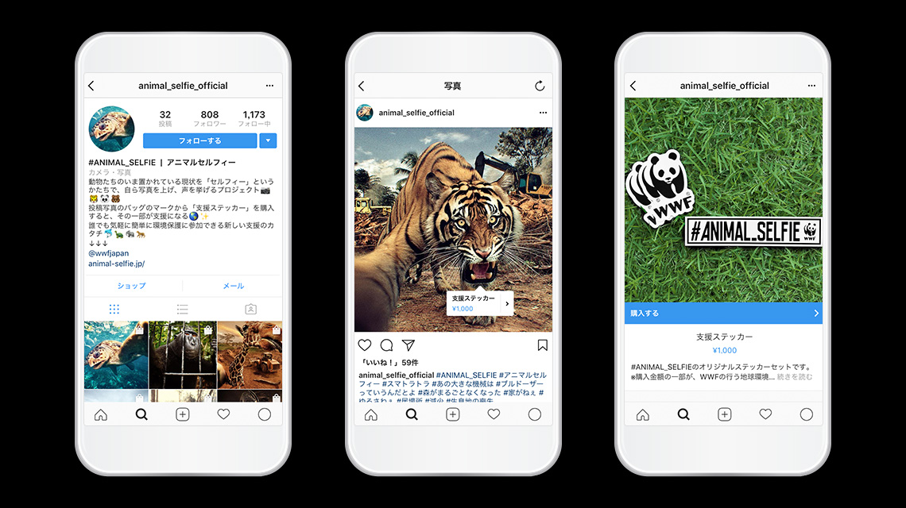
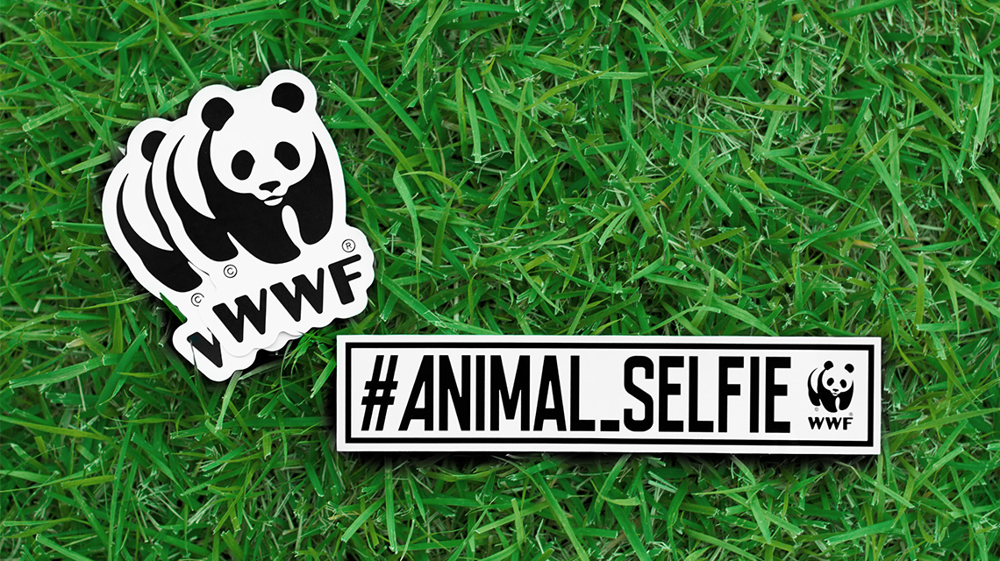
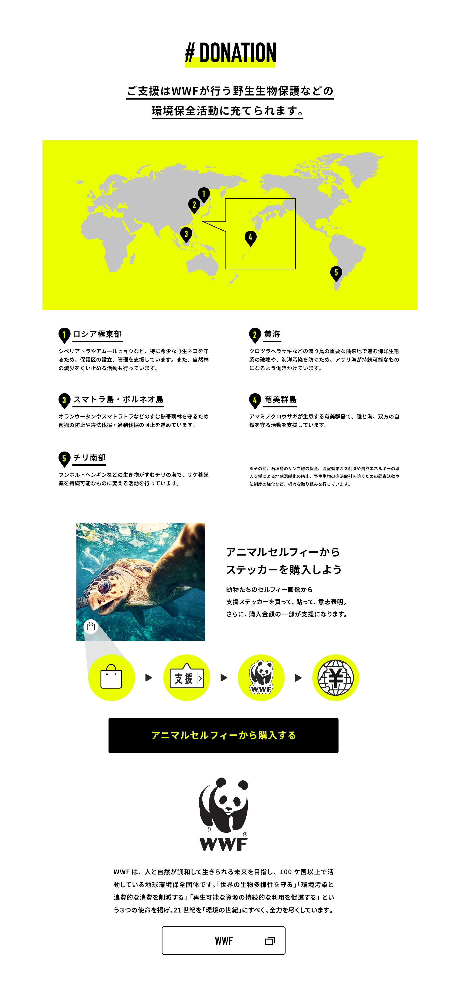

<!DOCTYPE html>
<html lang="ja">
  <head>
    <meta charset="UTF-8" />
    <meta name="viewport" content="width=device-width, initial-scale=1.0" />
    <meta name="robots" content="noindex, nofollow" />
    <title>🐼 .ma</title>
    <link rel="stylesheet" href="../assets/css/reset.css" />
    <link rel="stylesheet" href="../assets/css/style.css" />
    <link rel="stylesheet" href="https://use.typekit.net/lfv1zuy.css" />
    <link rel="icon" href="../assets/img/common/favcon.gif" />
  </head>
  <body id="works-detail">
    <div class="ss"></div>
    <div class="wrapper">
      <header id="header">
        <h1 class="hd1"><a href="../index.html">.ma</a></h1>
        <div class="nav-toggle">&#x25A6;</div>
        <nav>
          <ul class="nav-list">
            <li class="nav-item"><a href="../works.html">WORKS</a></li>
            <li class="nav-item"><a href="/experiment.html">EXPERIMENT</a></li>
            <li class="nav-item"><a href="../about.html">ABOUT</a></li>
          </ul>
        </nav>
      </header>
      <main id="main">
        <article>
          <div class="img-box">
            
          </div>
          <div class="img-box">
            
          </div>
          <div class="img-box">
            
          </div>
          <div class="img-box">
            
          </div>
          <div class="img-box">
            
          </div>
          <div class="credit">
            <p class="ttl">WWF #ANIMAL_SELFIE</p>
            <p class="description">
              動物たちが今置かれている状況を、動物たち自身がセルフィーでInstagramにアップして声をあげるプロジェクト。<br class="spnone" />
              32種の動物が、森林伐採や密猟などの過酷な住環境を背景にして過酷な現状をアピール。<br class="spnone" />
              投稿から環境保護活動への支援につながるステッカーが購入できるプラットフォームを作りました。
            </p>
            <p class="staff">
              <span>Cl : WWF</span>
              <span>CD : Masuda Fusanari</span>
              <span>AD : Nemoto Takaaki</span>
              <span>PrD : Nieda Shotaro</span>
              <span>Pr : Hayashi Kosuke</span>
              <span>Pl : Abe Tatsuya</span>
              <span>D : Matsuoka Asuka</span>
              <span>PM : Sumi Yuta</span>
            </p>
            <p class="date">2018</p>
          </div>
          <div class="back">
            <a href="../works.html"><span>← BACK</span></a>
          </div>
        </article>
      </main>
      <footer id="footer">
        <small>&copy;MATSUOKA ASUKA</small>
      </footer>
    </div>
    <script src="../assets/js/common.js"></script>
    <script src="../assets/js/ifvisible.js"></script>
    <script src="../assets/js/sss.js"></script>
  </body>
</html>
